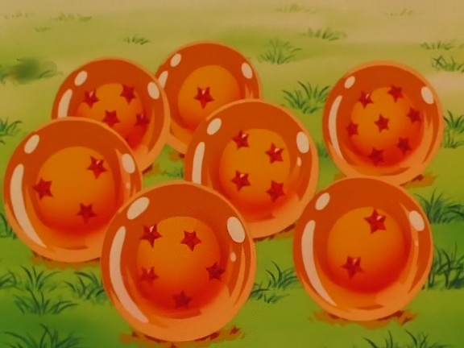
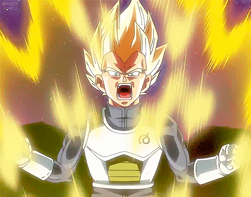
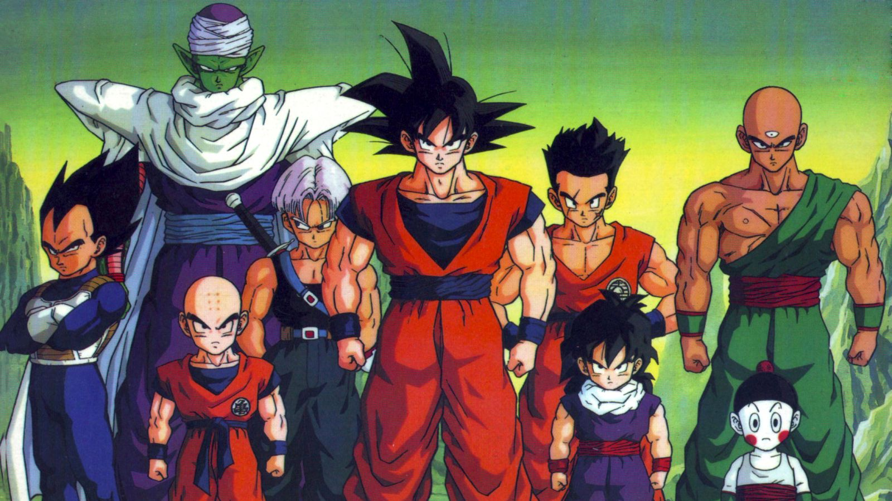
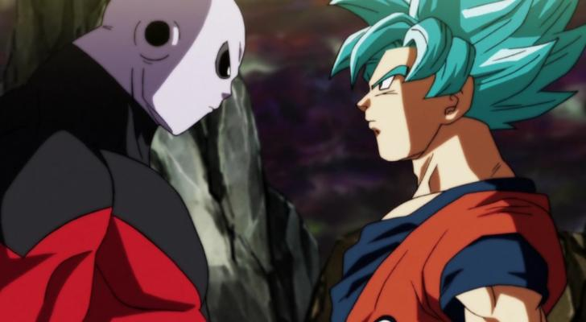
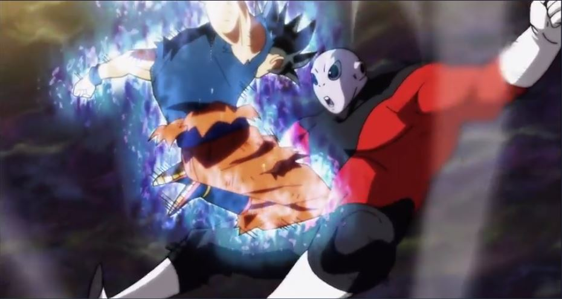
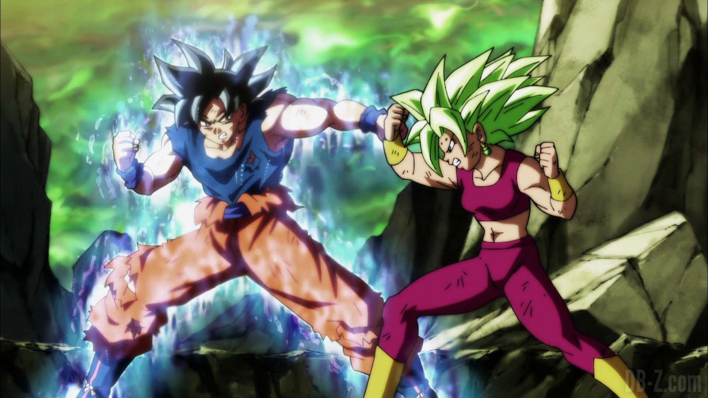

1 / 6

The infamous wish orbs each Dragon Ball series have extensively used. A dragon named Shenron appears once all seven balls are collected, and will grant any wish desired to those present.
2 / 6

Another Saiyan from Planet Vegeta, once Goku's rival and now friend Vegeta, utilizing the Super Saiyan power-up.
3 / 6

A pic of Goku with fellow members of the Z-Fighters, a group whose purpose is to defend Earth. (from left to right) Vegeta, Piccolo, Krillin (bottom, Trunks, Goku, Yamcha, Gohan (bottom), Tien, Chiaotzu (bottom)
4 / 6

A still from the ongoing Dragon Ball Super series. Here Goku is staring down his greatest enemy Jiren in a multi-versal fighting exhibition called the Tournament of Power. The form Goku is using in the still utilized the divine Super Saiyan God form's within the first Super Saiyan form, creating Super Saiyan God Super Saiyan (or Super Saiyan Blue).
5 / 6

Ultra Instinct, during Goku's first usage of it, allowing Goku to make a critical hit during the climax of his first battle with Jiren.
6 / 6

Goku is seen here fighting a woman named Kefla in the Tournament of Power, currently ongoing in Dragon Ball Super. He is in Ultra Instinct yet again, while Kefla is utilizing Super Saiyan 2.
❮
❯